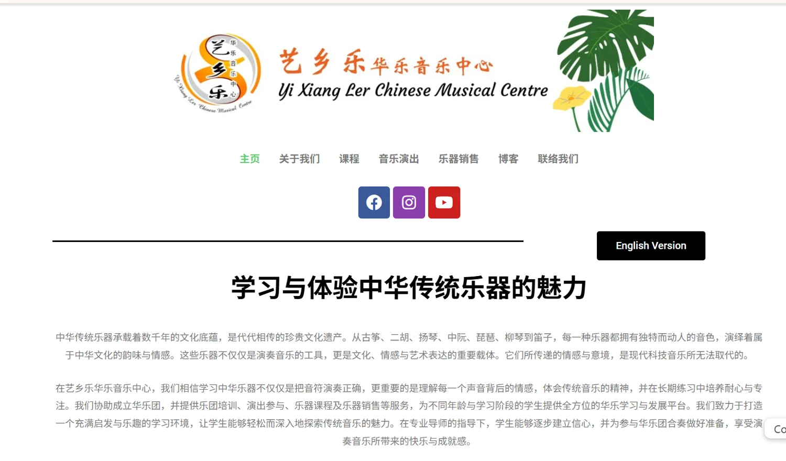
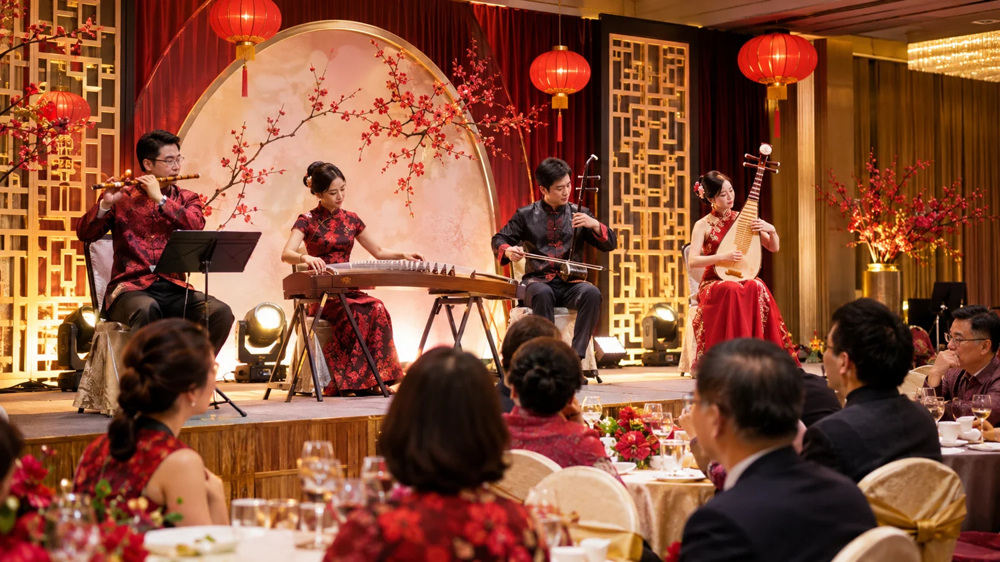

About Yi Xiang Ler
Yi Xiang Ler: Bringing Chinese Music Performance to Life in Malaysia
Discover our traditional music, live performance services, lessons and cultural activities in Petaling Jaya.
Read articleYi Xiang Ler Chinese Musical Centre brings traditional Chinese music to life through professional guzheng performances, Chinese orchestra ensembles and live entertainment for weddings, corporate events and Chinese New Year celebrations in Malaysia.
Visit official websiteDiscover the beauty of live Chinese music.

Discover our traditional music, live performance services, lessons and cultural activities in Petaling Jaya.
Read article
Explore how live guzheng can bring elegance and cultural character to your wedding reception.
Read article
Discover how festive Chinese ensembles can complement your 2027 corporate reunion dinner in Malaysia.
Read article